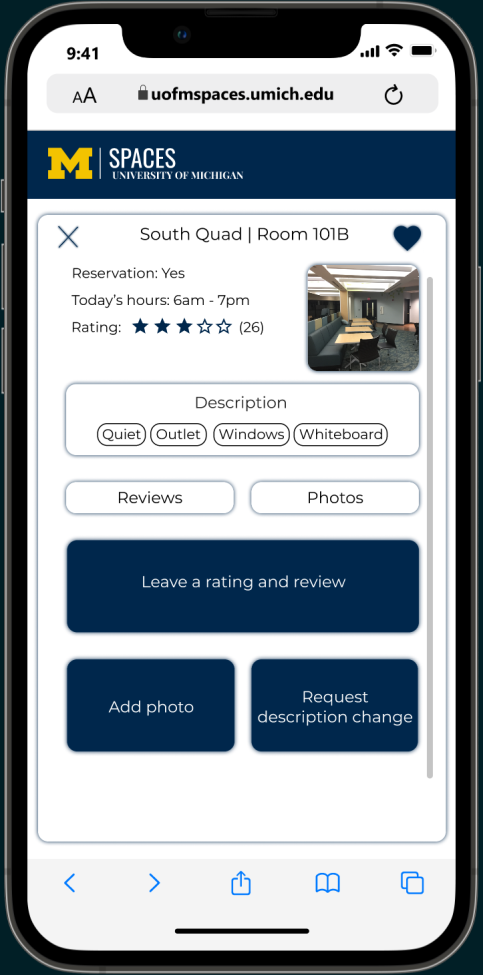
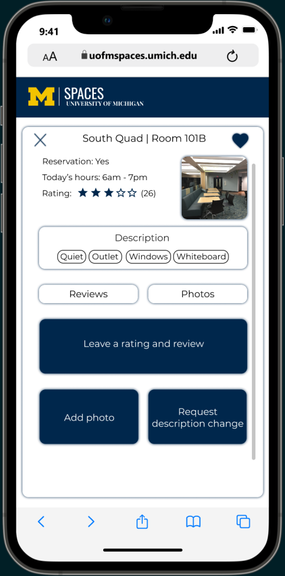

Cromaine District Library: Website Redesign
Created a website redesign prototype of the library's website - both deskop and mobile versions - to increase ease of use, accessibility, and connectivity to the community.
Client
Cromaine District Library, in the semi-rural community of Hartland Michigan
Project Type/Services
User Needs Evaluation: UX Research and Design
Date
January - April 2022
Project Roles
Usability Researcher/Tester; UX Researcher and Designer
Project Overview (NOT CORRECT)
- The client. a public library in a smaller semi-rural community in Michigan, which serves as the information and cultural hub of its geographic area, sought a user needs evaluation and a user experience design consultation to be able to provide the best web-based experience for the community. The current site struggled with accessibility, technical problems loading on some devices, jargony language which often frustrated patrons, and a confusing, overstimulating layout which stymied patrons in their search for information. Given the central role this public library plays in connecting citizens to information and to each other via community events and activities, it was hoped that a major-overhaul of the website would better serve all sectors of the community, from childern/teens to young adults, to the elderly.
- The client partnered with the Univeristy of Michigan's School of Information (UMSI) Design Clinic, a competitive, designer application-only experience, which provides interdisciplinary teams of 4 to 6 students to opportunity to work with clients "to seek innovative solutions to information challenges." I worked as a Needs and Usability Researcher, and UX Researcher and Designer on the project.
- Our team redesigned the website to address specific tasks patrons are trying to accomplish, while also supporting the library's function as a key information and cultural resource. In addition, our team will prepare a proposed interface for the new site, document the elements which should be on the home and secondary pages, and make recommendations for plainer vocabulary which will be less frustrating for patrons, and so, facilitate their task completion.
- High Fidelity Prototype (NOT CORRECT) ⬈
Cromaine Website Redesign: Pre and Post Redesign


Project Execution
Research, Design and Development Roadmap
Research | Methods and Key Findings
Analyzed the current site | Google Analytics
- Devices used to access the website: While the majority (62.4%) of library patrons accessed the website using a desktop device, more than a third (35.7%) relied on their mobile device, with the remaining patrons using a tablet (1.9%), highlighting the need to redesign the website with attention to both desktop and mobile applications.
- User age demographics: The library website was found to be visited by a wide age-range of patrons, from age 18 to 65+, in equal measure, with the exception of patrons ages 35-44 years, who were the most frequent users. The website's design must, then, be accessible and useable by this full developmental range.
- Pageviews by content: Over half of the visits to the website were to the homepage (53%), with much of the remaining visits focused on the summer reading program (15%) and the events/calendar (9%) pages. Because they are the most visited pages, we focused our redesign efforts on the Homepage and Events/Calendar pages. It became clear in our interview and survey user data, however, that the infrequency of visits to certain pages (e.g., those connecting patrons to desired digital resources and services) reflected design barriers to those pages, not lack of user interest. Survey/interview data (described below) highlighted the need to further focus redesign efforts on Digital Resources pages (e.g., connecting patrons to external sites and resources they can access with their Cromaine library card).
Collected and analyzed user survey (quantitative) data | Qualtrics
- What type of device do you typically access the library website on?: 45% mobile, 19% two or more devices; 32% desktop/laptop; 3% tablet; again, use this deata to reinforce importance of attention to mobile design, which had not been a design priority for existing website.
- How frequently do you use the Cromaine District library website? Data indicated high use, underscoring its important role in the community as an informational hub, with about 5% of users visiting daily, almost 30% 3-4 times/week, and approximately 45% 3-4 times/month.
- What do you use the library website for the most?

Spoke with the users | Qualitative Data Analysis of Interview and Survey Data
- Patrons, while valuing the library and its services highly, repeatedly expressed a range of frustrations with the website, including:
- Finding it confusing to execute even the simplest of tasks (e.g. finding a book)
- Being visually overwhelming
- Lacking an intuitive, easy-to-learn design
In the library users' own words


Key Design Goals and Website Redesign
- The website needs to be easier to navigate
- Frequently visited pages and important information need to be easier to find
- The information architecture of thee main navigation menu needs to be reorganized so patrons can find things with less difficulty
- The website has to be more accessible
- Fonts, color contrasts, and asstes like the picture carousel on the homepage need to be altered to meet accessibility standards
- Patrons with disabilities and those included in older demographics should still find the website easy to use
Branding


The Main Navigation
- Made the navigation bar more simple and discoverable
- Removed redundant links
- Reworded navigation items to make them more user friendly
Before

After

New Information Architecture
Header

Footer

Search Function
The Homepage
Old Homepage

Redesigned Desktop Homepage
Redesigned Mobile Homepage
Digital Resources
Mobile Responsive Sizing
Calendar
Footer
Key Features of the U of M Spaces Website/Webapp
Combining the results of the background and user research and the competitive analysis, I identified key elements which I deemed the most important to address the problem, borrowing some elements from other sites. I included these key elements in the creation of a low, and then medium fidelity prototype, using Figma.
- Search for a study space, using the tool's richly detailed information about space features (includes filters for amenities, reservation options, specific building, and more)
- Today's recommendations (random recommendations to help users discover new spaces)
- Favorite spaces and reservations (the spaces users would like to come back to, and past/current reservations)
- Review a study space, add a picture, or description; (user examplar screens included below)
- Submit a request to add a new space to the system
 

Conducted Usability Testing
Conducted usability testing on the medium fidelity prototype, and iterated the design to reflect user feedback.
- Overall, users found the tool to be “intuitive” in design - reporting that it was easy to navigate and that “tasks” (e.g., filtering for amenities) could be completed quickly. Several users commented on the enjoyable aesthetics of the tool.
- Where users reported confusion about aspects of the design, or steps in a process, I reworked the tool using this feedback (e.g., Users had difficulty locating the button to view past reservations; I reworked the design to make the button to “view past reservations” easier to find and to clarify the function of the button).
Created High Fidelity Prototype (in Figma)
View High Fidelity Prototype ⬈Potential Outcome and Social Impacts of U of M Spaces Tool
If implemented, the tool will help students at U of M easily and efficiently locate and possibly reserve study spaces which are nearby and match their needs for certain features and resources, securing a more optimal study space for them. The tool will have a positive social impact on the U of M campus in 3 ways:
- It will promote social engagement with the campus community by encouraging students to contribute to the growth of the site to help one another have a better experience finding best-for-them study spaces.
- As the tool reduces frustration and stress for already stressed students when they are looking for spaces, and helps people do their best academically by helping them identify optimal study spaces, the tool will promote mental health and academic success.
- The tool will promote equity and support students' diverse needs; the tool makes it easy for all students to access the same information, quickly and easily. In addition, I hope that having access to rich information will be of special help to students with disabilities who may need extra help identifying spaces that are a good fit for their needs.
- Cromain Redesign Team:
- Ben Greenberg
- Amy Engineer
- Mayank Kinger
- Xiaochen Shi
- Meghan Quigley